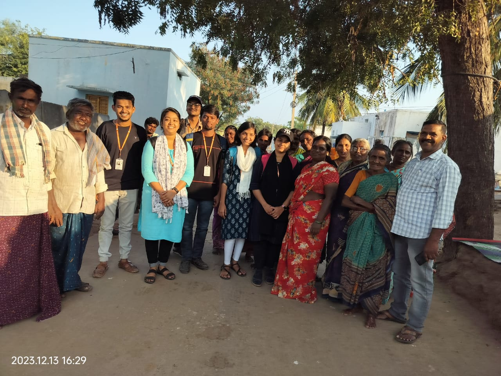
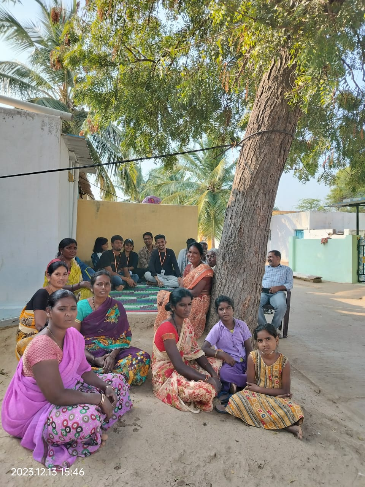
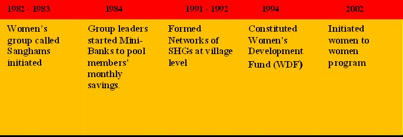
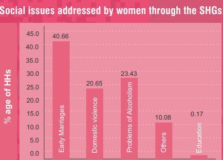

Self Help Groups


By forming and strengthening these sanghams in the villages, RDT promotes the collective autonomy and the rights of women at the grassroot level.


In the 1980s, the visionary Father Ferrer embarked on a transformative journey through the villages of the Ananthapuram district. His observations painted a stark picture of gender inequality, domestic violence, and child marriages that plagued the lives of women in these communities. Fueled by a deep commitment to fostering change and empowering women, Father Ferrer took a momentous step by establishing Sanghams in each village across the Ananthapuram district.
These Sanghams, envisioned as empowering forums, were designed to uplift and support women, granting them a platform to voice their concerns and collectively work towards their welfare. Father Ferrer recognized that the key to addressing the challenges faced by women lay in fostering awareness, encouraging solidarity, and providing tangible avenues for empowerment.
Each Sangam, a microcosm of empowerment, comprises a specific number of members within the village. These members, often representative of diverse backgrounds and experiences, unite under the common banner of seeking positive change in their lives. The Sanghams, under the auspices of Rural Development Trust (RDT), became catalysts for women's empowerment, advocating for equal status, and challenging the prevailing norms that perpetuated gender-based discrimination. To translate empowerment into tangible benefits, Father Ferrer and RDT conceptualized the Women Development Fund (WDF). This fund was not just a financial resource but a tool for economic independence and a means to break free from the chains of inequality. Every member of the Sangam was entitled to a loan amount of 40,000 rupees, courtesy of the WDF.
The utilization of the Women Development Fund was two-fold. Firstly, it provided women with the means to generate income, fostering entrepreneurship and self-sustainability. Empowered with financial resources, these women could venture into various economic activities, be it small-scale businesses, cottage industries, or agricultural endeavors, thereby contributing to the economic upliftment of their households and communities.
Secondly, the fund allowed women to make strategic investments, such as purchasing cattle. This not only augmented the agricultural landscape but also served as a source of sustainable income. The empowerment of women through the judicious use of the Women Development Fund disrupted the cyclical nature of poverty and inequality, creating a positive ripple effect in the entire community. The establishment of Sanghams and the implementation of the Women Development Fund were pivotal in reshaping the narrative for women in the Ananthapuram district. No longer confined by the shackles of societal norms, women found themselves at the forefront of change, actively participating in decision-making processes and charting their own destinies.
Success Story:
In the heart of P. Kothapalli village, nestled within the expansive domain of the Atmakuru area and affiliated with the Indira Mahilasanga, a remarkable woman named Lakshmi has become a beacon of empowerment, thanks to the transformative impact of the Women Development Fund (WDF). Lakshmi's journey, spanning nearly five years, stands as a testament to the profound changes initiated by Rural Development Trust (RDT) through this groundbreaking initiative.
Lakshmi, a proud member of the Indira Mahilasanga, has seamlessly integrated herself into the fabric of empowerment facilitated by the WDF. Over the years, she has been a consistent beneficiary, accessing the loan facility and adhering to the repayment schedule with commendable diligence. This financial support has been a lifeline for Lakshmi, empowering her to make strategic investments that transcend the boundaries of her household. Using the WDF, Lakshmi made a pivotal decision to invest in cattle—a choice that exemplifies the tangible impact of economic empowerment on rural livelihoods. With the support of the fund, she acquired five cows and two buffalos, creating a small yet robust dairy enterprise within her household. The daily production of milk from these animals has become a reliable source of income for Lakshmi's family, contributing to their economic stability and resilience.
However, the journey toward empowerment did not begin and end with financial assistance. The initiation of groups within the community, facilitated by RDT workers, played a crucial role in creating a supportive ecosystem for women like Lakshmi. These groups, initially focused on shared experiences and discussions, became platforms for addressing broader issues related to education, basic health, and hygiene. For Lakshmi and others, breaking away from centuries-old mindsets of subservience and inferiority was a gradual process. RDT workers, through these groups, delicately coaxed women out of deeply ingrained belief systems, opening up avenues for empowerment and economic independence. These gatherings evolved into spaces where women could share their triumphs, struggles, and aspirations, fostering a sense of community and solidarity.
In essence, Lakshmi's journey encapsulates the transformative impact of the Women Development Fund and the collective empowerment fostered by RDT-initiated groups. Her story is emblematic of how targeted interventions, both financial and communal, can break the shackles of inequality and empower women to redefine their roles in society. Lakshmi, once a participant in a group discussion, has emerged as a symbol of resilience and empowerment—a testament to the enduring impact of initiatives that prioritize the holistic well-being and agency of women in rural communities.